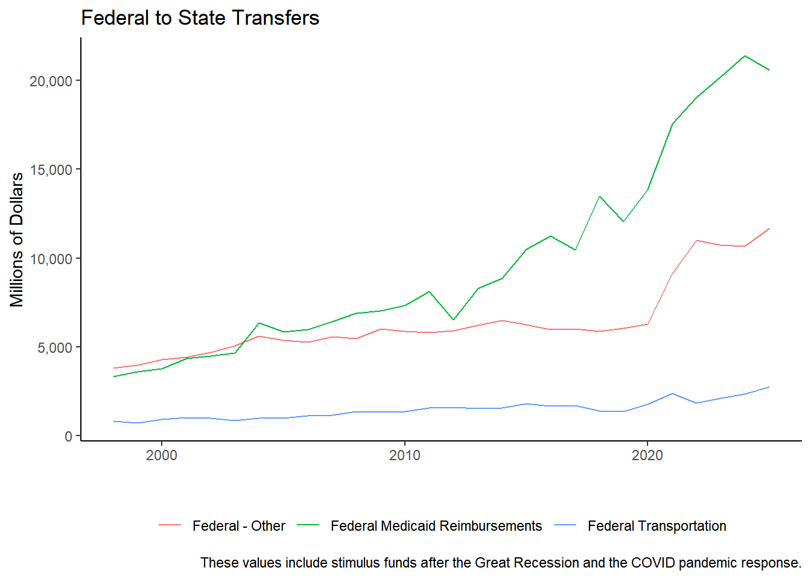
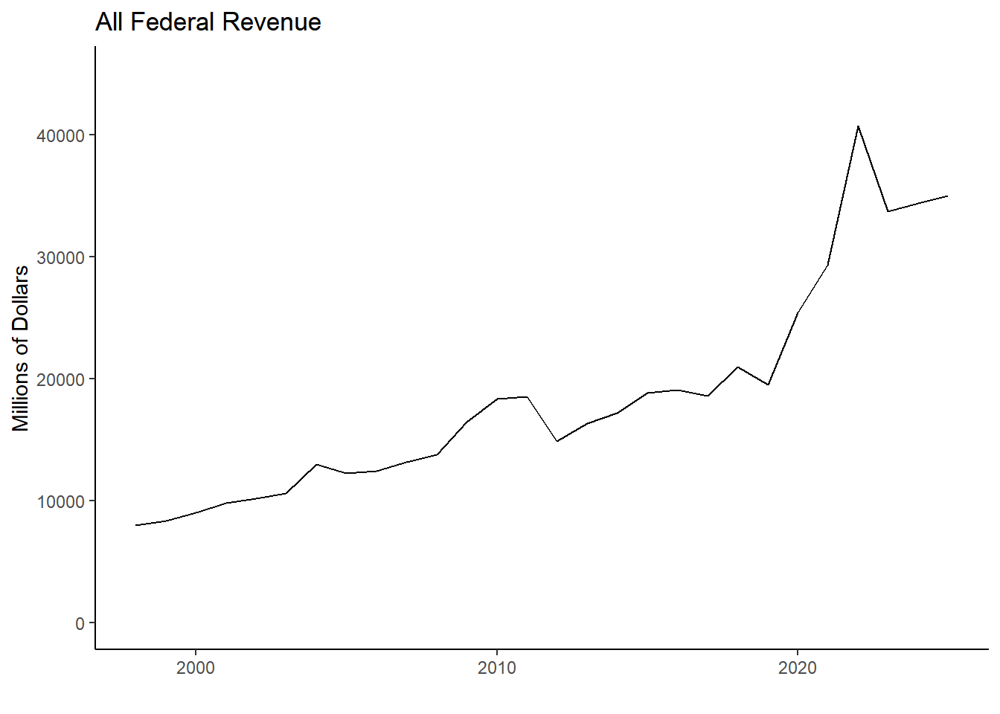
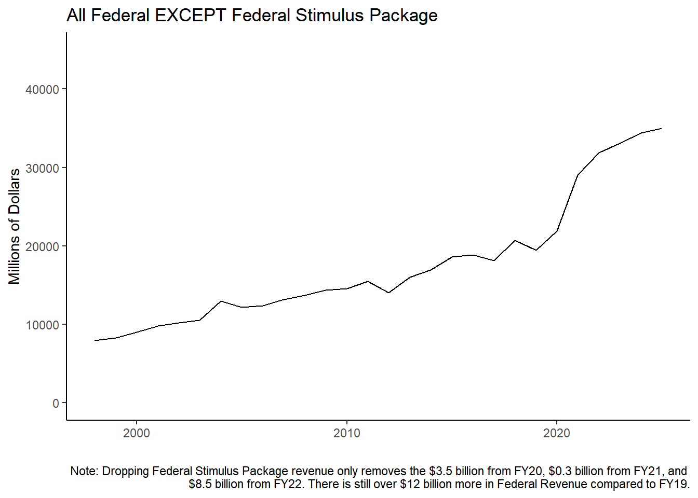

The Fiscal Futures Model divides federal funds (IOC revenue type = 57) into Medicaid, Transportation, and All Other Federal Funds. “All Other” federal revenue can include: Health and Human Services Grants, Federal Stimulus Package, Department of Education Grants, Department of Transportation Grants, Department of Agriculture Grants, TANF Grants, and Department of Labor Grants.
Federal Medicaid: DHFS receives money for Medicaid that is deposited into the General Revenue Fund. There are also Special State Funds used for Medicaid that receive specific revenues (e.g. Healthcare Provider Taxes) which are matched with Federal Funds. The federal receipts in these special funds are aggregated and added to the federal receipts in the GRF that are received by DHFS.
Revenue Sources:
618 = Health and Human Services (not used)
660 = HHS/Hospital Participation
676 = Medical Assistance
692 = Medical Assistance
1552 = DHHS/ FFP-Medicaid Rehab Option
2306 = Enhanced Fed Fin PART-ARRA
2076 = IDPH-HHS/CMS
2364 = Department of Insurance (not used)
Revenue Source=1530 is labeled Medicaid Matching in IOC Sources list but it isn’t used? 2140 is Matching Grant Monies but is also not used?
Other potential medicaid sources from CTRL-Fing “med” in revenue sources: Sources: 2104 = Medicare Part D & 675 = Medical Administration
The Department of Healthcare and Family Services (DHFS) receives federal monies for Medicaid that are deposited into the General Revenue Fund. In addition, a number of special state funds are used for Medicaid. These funds receive specific revenues –e.g., Healthcare Provider Taxes—which are then matched with federal monies at approximately 50 percent. There are differences in the proportion of federal vs. state monies in the various funds, but the key is that there is a significant federal component to the receipts in the funds. The federal receipts in these special funds are aggregated and added to the federal receipts in the GRF that are received by DHFS.
Federal Transportation: If Agency is 494 and considered Federal Revenue, then it is recoded to its own category of “Federal Transportation”.
Federal revenue broken down into Transportation, Medicaid, and Other:
Code
rev_temp <- rev_temp %>%mutate(rev_type =ifelse(rev_type=="57"& agency=="478"& (source=="0618"|source=="2364"|source=="0660"|source=="1552"| source=="2306"| source=="2076"|source=="0676"|source=="0692"), "58", rev_type),rev_type_name =ifelse(rev_type=="58", "Federal Medicaid Reimbursements", rev_type_name),rev_type =ifelse(rev_type=="57"& agency=="494", "59", rev_type),rev_type_name =ifelse(rev_type=="59", "Federal Transportation", rev_type_name),rev_type_name =ifelse(rev_type=="57", "Federal - Other", rev_type_name),rev_type =ifelse(rev_type=="6", "06", rev_type),rev_type =ifelse(rev_type=="9", "09", rev_type)) rev_temp %>%filter(rev_type =="58"| rev_type =="59"| rev_type =="57") %>%group_by(fy, rev_type, rev_type_name) %>%summarise(receipts =sum(receipts, na.rm =TRUE)/1000000) %>%ggplot(aes(x=fy, y=receipts,color=rev_type_name)) +geom_recessions(xformay ="numeric",text =FALSE)+geom_line(aes(x=fy, y=receipts,color=rev_type_name)) +theme_classic() +scale_y_continuous(labels = comma)+labs(title ="Federal to State Transfers", caption ="These values include stimulus funds after the Great Recession and the COVID pandemic response.",y ="Millions of Dollars", x ="") +theme(legend.position ="bottom", legend.title =element_blank() )
Code
rev_temp %>%filter(rev_type =="58"| rev_type =="59"| rev_type =="57") %>%filter(source_name_AWM !="FEDERAL STIMULUS PACKAGE"& source_name_AWM !="STATE CURE") %>%group_by(fy, rev_type, rev_type_name) %>%summarise(receipts =sum(receipts, na.rm =TRUE)/1000000) %>%ggplot() +geom_line(aes(x=fy, y=receipts,color=rev_type_name)) +theme_classic() +scale_y_continuous(labels = comma)+labs(title ="Federal to State Transfers", caption ="These values include stimulus funds after the Great Recession and the COVID pandemic response.",y ="Millions of Dollars", x ="") +theme(legend.position ="bottom", legend.title =element_blank() )

All federal revenue summed together:
Code
fedrev<- rev_temp %>%filter(rev_type =="58"| rev_type =="59"| rev_type =="57") fedrev %>%group_by(fy) %>%summarise(receipts =sum(receipts, na.rm =TRUE)/1000000) %>%ggplot() +geom_line(aes(x=fy, y=receipts)) +theme_classic() +scale_y_continuous(labels = comma)+labs(title ="All Federal Revenue", y ="Millions of Dollars", x ="") +theme(legend.position ="bottom", legend.title =element_blank() )+scale_y_continuous(limits =c(0,45000))

Code
fedrev %>%filter(source_name_AWM !="FEDERAL STIMULUS PACKAGE") %>%group_by(fy) %>%summarise(receipts =sum(receipts, na.rm =TRUE)/1000000) %>%ggplot() +geom_line(aes(x=fy, y=receipts)) +theme_classic() +scale_y_continuous(labels = comma)+labs(title ="All Federal EXCEPT Federal Stimulus Package", y ="Millions of Dollars", x ="",caption ="Note: Dropping Federal Stimulus Package revenue only removes the $3.5 billion from FY20, $0.3 billion from FY21, and $8.5 billion from FY22. There is still over $12 billion more in Federal Revenue compared to FY19.") +theme(legend.position ="bottom", legend.title =element_blank() ) +scale_y_continuous(limits =c(0,45000))

Source Code
# Federal RevenueThe Fiscal Futures Model divides federal funds (IOC revenue type = 57) into Medicaid, Transportation, and All Other Federal Funds. "All Other" federal revenue can include: Health and Human Services Grants, Federal Stimulus Package, Department of Education Grants, Department of Transportation Grants, Department of Agriculture Grants, TANF Grants, and Department of Labor Grants.**Federal Medicaid:** DHFS receives money for Medicaid that is deposited into the General Revenue Fund. There are also Special State Funds used for Medicaid that receive specific revenues (e.g. Healthcare Provider Taxes) which are matched with Federal Funds. The federal receipts in these special funds are aggregated and added to the federal receipts in the GRF that are received by DHFS.**Revenue Sources:**- 618 = Health and Human Services (not used)- 660 = HHS/Hospital Participation- 676 = Medical Assistance- 692 = Medical Assistance- 1552 = DHHS/ FFP-Medicaid Rehab Option- 2306 = Enhanced Fed Fin PART-ARRA- 2076 = IDPH-HHS/CMS- 2364 = Department of Insurance (not used)- Revenue Source=1530 is labeled Medicaid Matching in IOC Sources list but it isn't used? 2140 is Matching Grant Monies but is also not used?- Other potential medicaid sources from CTRL-Fing "med" in revenue sources: Sources: 2104 = Medicare Part D & 675 = Medical AdministrationThe Department of Healthcare and Family Services (DHFS) receives federal monies for Medicaid that are deposited into the General Revenue Fund. In addition, a number of special state funds are used for Medicaid. These funds receive specific revenues --e.g., Healthcare Provider Taxes---which are then matched with federal monies at approximately 50 percent. There are differences in the proportion of federal vs. state monies in the various funds, but the key is that there is a significant federal component to the receipts in the funds. The federal receipts in these special funds are aggregated and added to the federal receipts in the GRF that are received by DHFS.**Federal Transportation:** If Agency is 494 and considered Federal Revenue, then it is recoded to its own category of "Federal Transportation".```{r warning=FALSE, message=FALSE, echo=FALSE}library(tidyverse)library(haven)library(formatR)library(lubridate)library(scales)library(kableExtra)library(ggplot2)library(readxl)library(tidyverse)library(data.table)library(janitor)#devtools::install_github("CMAP-REPOS/cmapplot", build_vignettes=TRUE)library(cmapplot)theme_set(theme_classic())knitr::opts_chunk$set(echo = TRUE, warning = FALSE, message = FALSE)current_year <- 2025 # fiscal year, not calendar yearpast_year=current_year-1rev_temp <- read_csv(paste0("data/FY", current_year, " Files/rev_temp.csv")) |> filter(agency != "799" & rev_type != "75")```Federal revenue broken down into Transportation, Medicaid, and Other:```{r}rev_temp <- rev_temp %>%mutate(rev_type =ifelse(rev_type=="57"& agency=="478"& (source=="0618"|source=="2364"|source=="0660"|source=="1552"| source=="2306"| source=="2076"|source=="0676"|source=="0692"), "58", rev_type),rev_type_name =ifelse(rev_type=="58", "Federal Medicaid Reimbursements", rev_type_name),rev_type =ifelse(rev_type=="57"& agency=="494", "59", rev_type),rev_type_name =ifelse(rev_type=="59", "Federal Transportation", rev_type_name),rev_type_name =ifelse(rev_type=="57", "Federal - Other", rev_type_name),rev_type =ifelse(rev_type=="6", "06", rev_type),rev_type =ifelse(rev_type=="9", "09", rev_type)) rev_temp %>%filter(rev_type =="58"| rev_type =="59"| rev_type =="57") %>%group_by(fy, rev_type, rev_type_name) %>%summarise(receipts =sum(receipts, na.rm =TRUE)/1000000) %>%ggplot(aes(x=fy, y=receipts,color=rev_type_name)) +geom_recessions(xformay ="numeric",text =FALSE)+geom_line(aes(x=fy, y=receipts,color=rev_type_name)) +theme_classic() +scale_y_continuous(labels = comma)+labs(title ="Federal to State Transfers", caption ="These values include stimulus funds after the Great Recession and the COVID pandemic response.",y ="Millions of Dollars", x ="") +theme(legend.position ="bottom", legend.title =element_blank() )rev_temp %>%filter(rev_type =="58"| rev_type =="59"| rev_type =="57") %>%filter(source_name_AWM !="FEDERAL STIMULUS PACKAGE"& source_name_AWM !="STATE CURE") %>%group_by(fy, rev_type, rev_type_name) %>%summarise(receipts =sum(receipts, na.rm =TRUE)/1000000) %>%ggplot() +geom_line(aes(x=fy, y=receipts,color=rev_type_name)) +theme_classic() +scale_y_continuous(labels = comma)+labs(title ="Federal to State Transfers", caption ="These values include stimulus funds after the Great Recession and the COVID pandemic response.",y ="Millions of Dollars", x ="") +theme(legend.position ="bottom", legend.title =element_blank() )```\All federal revenue summed together:```{r}fedrev<- rev_temp %>%filter(rev_type =="58"| rev_type =="59"| rev_type =="57") fedrev %>%group_by(fy) %>%summarise(receipts =sum(receipts, na.rm =TRUE)/1000000) %>%ggplot() +geom_line(aes(x=fy, y=receipts)) +theme_classic() +scale_y_continuous(labels = comma)+labs(title ="All Federal Revenue", y ="Millions of Dollars", x ="") +theme(legend.position ="bottom", legend.title =element_blank() )+scale_y_continuous(limits =c(0,45000))``````{r}fedrev %>%filter(source_name_AWM !="FEDERAL STIMULUS PACKAGE") %>%group_by(fy) %>%summarise(receipts =sum(receipts, na.rm =TRUE)/1000000) %>%ggplot() +geom_line(aes(x=fy, y=receipts)) +theme_classic() +scale_y_continuous(labels = comma)+labs(title ="All Federal EXCEPT Federal Stimulus Package", y ="Millions of Dollars", x ="",caption ="Note: Dropping Federal Stimulus Package revenue only removes the $3.5 billion from FY20, $0.3 billion from FY21, and $8.5 billion from FY22. There is still over $12 billion more in Federal Revenue compared to FY19.") +theme(legend.position ="bottom", legend.title =element_blank() ) +scale_y_continuous(limits =c(0,45000))```